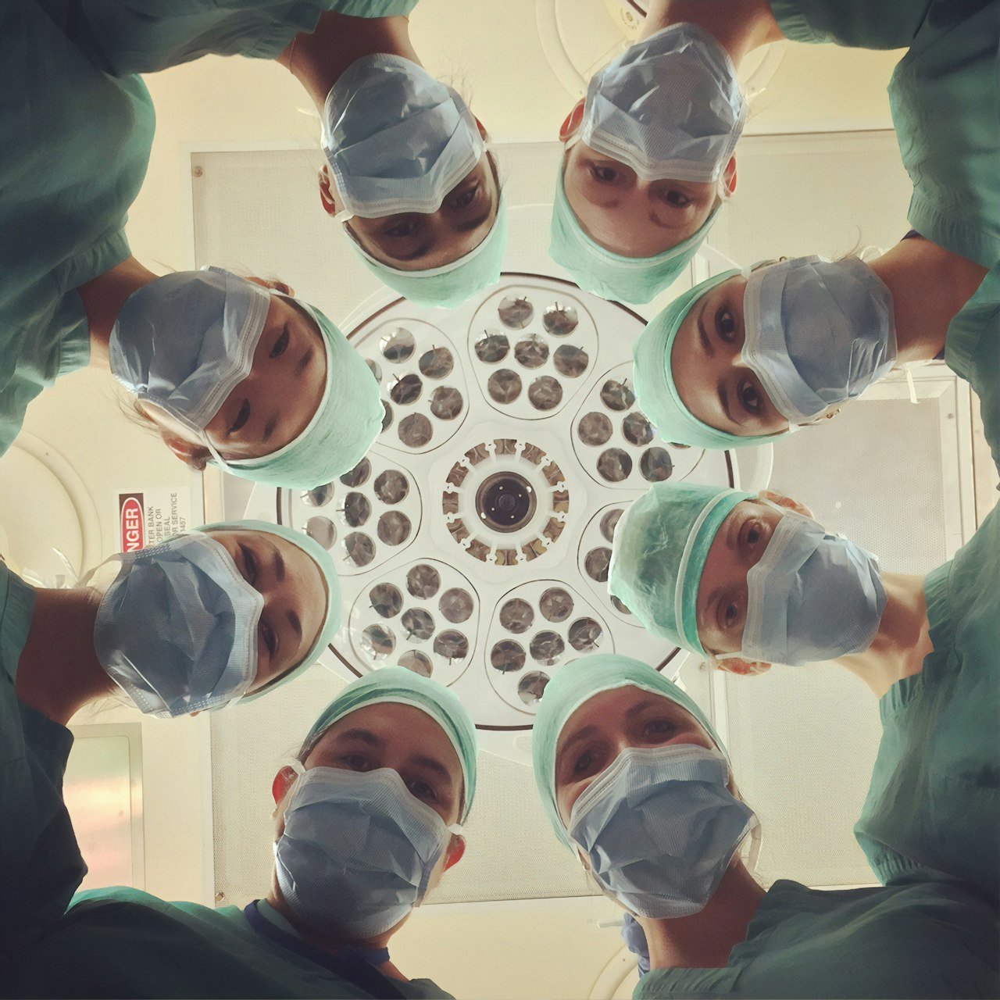
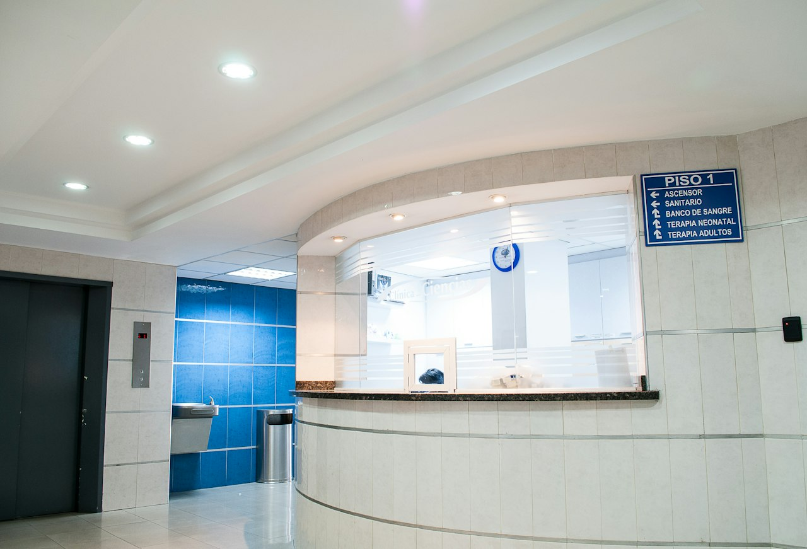

En el Hospital Salud Vida contamos con los mejores especialistas y la tecnología más avanzada para brindarte la atención que mereces, con calidez humana y excelencia médica.

Ofrecemos atención integral con tecnología de punta y profesionales altamente capacitados.
Diagnóstico y tratamiento de enfermedades cardiovasculares con equipos de última generación y cardiólogos intervencionistas certificados.
Cuidado integral del niño desde el nacimiento hasta la adolescencia. Nuestros pediatras garantizan un desarrollo saludable y feliz.
Diagnóstico y tratamiento de trastornos del sistema nervioso central y periférico, con neurólogos clínicos y neurocirujanos de alto nivel.
Atención de emergencias las 24 horas del día, los 365 días del año. Nuestro equipo de trauma y urgencias está siempre listo.
Tomografía, resonancia magnética, ecografía y radiología digital con equipos de última tecnología para diagnósticos precisos y rápidos.
Procedimientos quirúrgicos ambulatorios y de alta complejidad con técnicas mínimamente invasivas y laparoscópicas de vanguardia.

El Hospital Salud Vida es una institución prestadora de servicios de salud comprometida con la excelencia médica, la innovación tecnológica y el bienestar integral de cada paciente.
Desde nuestra fundación hemos atendido a miles de familias, brindando atención humanizada, oportuna y de alta calidad en nuestras modernas instalaciones ubicadas en el corazón de la ciudad de Pasto, Nariño.
Profesionales comprometidos con tu salud y bienestar, con formación en las mejores universidades del país y el mundo.

Especialista en cardiología intervencionista con 15 años de experiencia. Formada en la Universidad Nacional y con fellowship en España.
Neurólogo clínico especializado en trastornos del movimiento y epilepsia. Docente universitario y miembro de la Sociedad Colombiana de Neurología.

Pediatra con subespecialidad en neonatología. Más de 12 años cuidando la salud de los más pequeños en nuestra institución.
Cirujano general y laparoscópico con certificación en técnicas mínimamente invasivas. Más de 2,000 procedimientos exitosos.